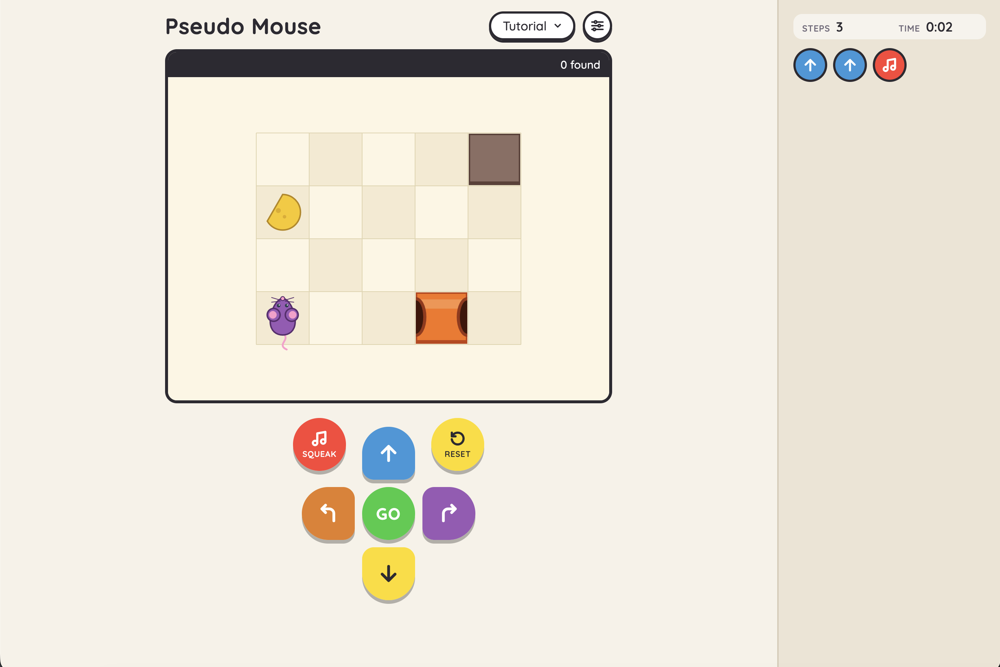
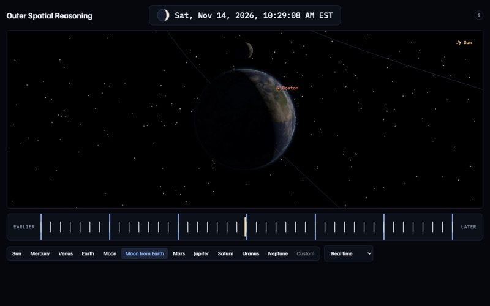
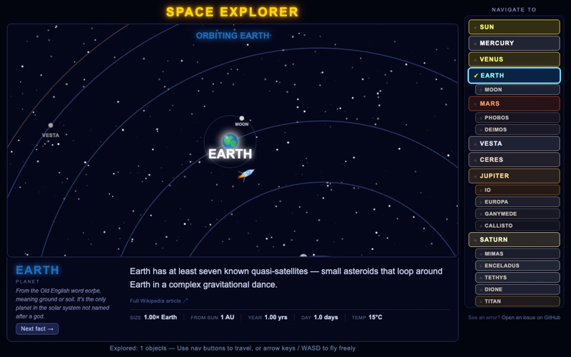
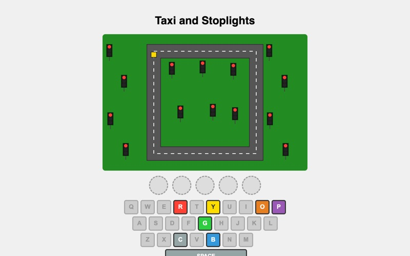
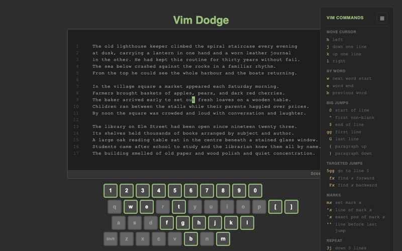

Programming
Tools from work
A large part of my day-to-day is proprietary, but a few of the tools I’ve made have either been disclosed as patents or would not be considered proprietary.
-
Dell Chat
An internal AI platform where I was the tech lead and a hands-on engineer. We adapted early versions of the open source Open WebUI to work within Dell, enabling users and teams to experiment and distribute their own AI solutions. It grew to over 30,000 registered users and 4,000 daily users.
-
Retriever
An application to help the team write and submit reports and patent disclosures. The most interesting part is that it uses pandoc to convert from markdown, which the team does like using, into LaTeX templates that match designs required by the org. A similar markdown-to-PDF engine is open source as template_builder.
-
Springerdoodle
A prototype I made in Elm and Flask in 2019 to manage access to remote machines. Noting that developers defaulted to username/password, it took care of the mechanics of key transfer and setting up the ssh config. The prototype is associated with the patent US11489824B2.
Public projects
GitHub →I’m happy to talk about any of the projects on my GitHub. Here are a few of the more recent and interesting ones.
-
libaduk.com
I like the way Lichess feels and wanted to study Go with a similar interface. It can play games on OGS, has puzzles, a shared library for game review, and an in-browser KataGo opponent, and has over 150 registered players.
Using LLMs is currently controversial. For this site I made extensive use of Claude at the start to port over the HTML and CSS from lila and the board implementation from Sabaki into Svelte. That got me to a working site that looks like Lichess, which I have tried and failed to do a few times before. While I wouldn’t consider the site “vibe coded” by most definitions (I read and rewrite code going in), I do use LLMs in development. The source is AGPL licensed.
-
ep_vim
When we were experimenting with Etherpad internally, I missed vim keybindings, so I made a plugin that adds them. It has normal, insert, and visual modes, motions, text objects, operators, registers, marks, search, counts, and dot-repeat. It’s published on npm and was mostly written with Claude Code.
-
Goban IRL
An app that uses a webcam to track the state of a Go board using OpenCV. While I’ve seen a lot of sophisticated strategies for detecting stones with image recognition, the strategy here is to just use the color differential between black and white stones, which is sufficient, cheap, and fast. As a proof of concept I was able to use this library to copy games from a physical board to a computer, and also between two computer boards.
-
Player Pyano
At home I’m housesitting a 1989 Yamaha Disklavier grand piano, which takes in floppy disks of MIDI and plays the song using solenoids built into the piano. Thankfully, MIDI hasn’t really changed in the last 30 years. This is a webapp that I run on a Raspberry Pi to quickly create a playlist and send songs to the piano. The software also adjusts note velocity to account for the physical state of the piano.
-
Wordle Strategy Evaluation
When everyone was playing Wordle, there was some speculation on what the optimal strategy would be. To quickly test out varying strategies I threw together a TDD Wordle implementation in Python to test a given strategy against the full word list. The oft-proposed strategy of selecting words by how often a letter appears in a particular position only scores an average of 3.81 guesses across the word set.
Fun and games
These are fully vibe coded. They’re mostly made to entertain myself and my family, but they might be fun for you too!

Mouse Programming tutorial for kindergarteners. Create a program and execute it to get cheese.
Outer Spatial Reasoning The Sun, Earth, and Moon in real time to see phases of the moon and relative position of the planets.
Space Explorer Fly a rocket around the solar system and see fun facts from Wikipedia.
Taxi and Stoplights Red light, green light, and others.
Vim Dodge Dodge walls with vim keybindings.